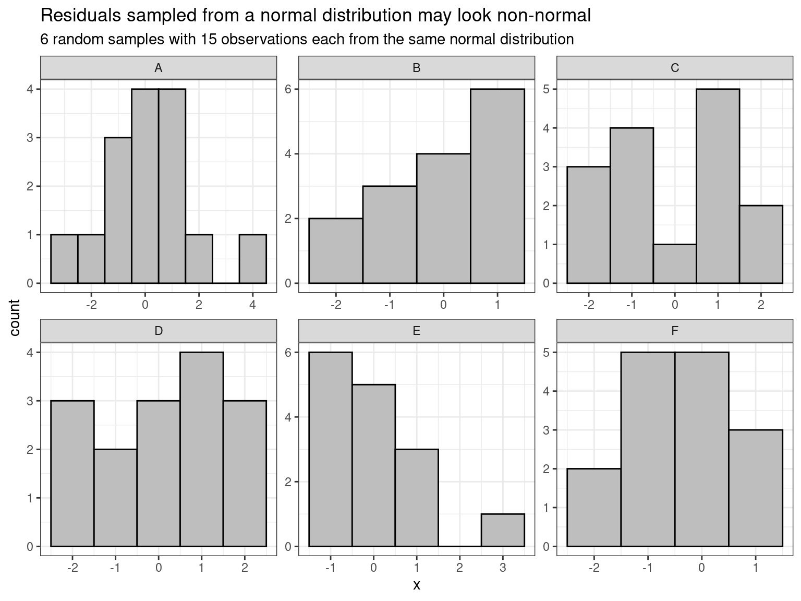
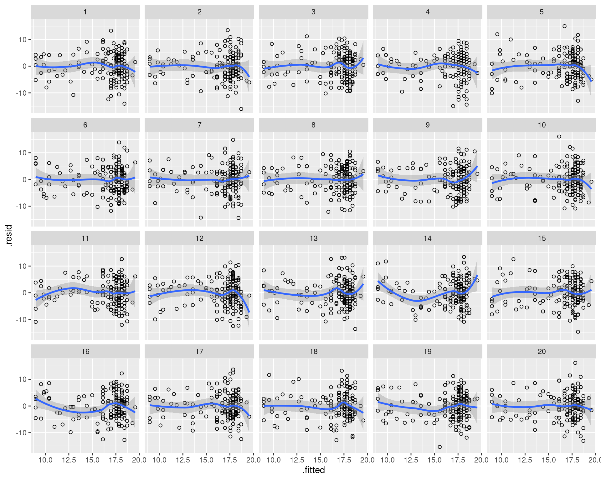
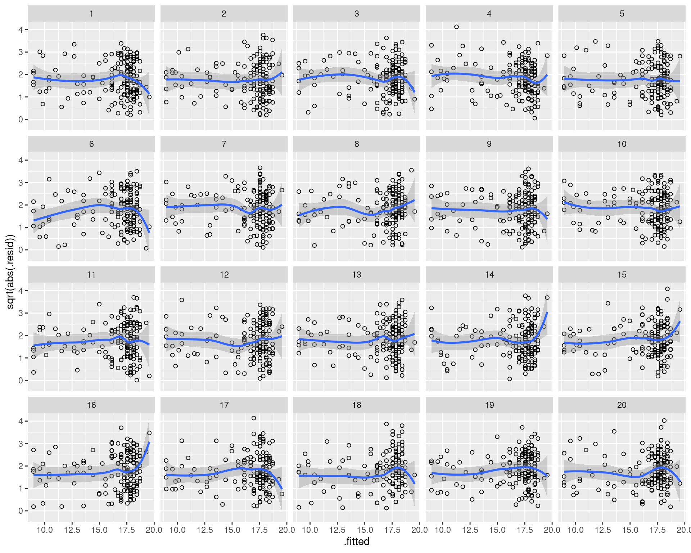
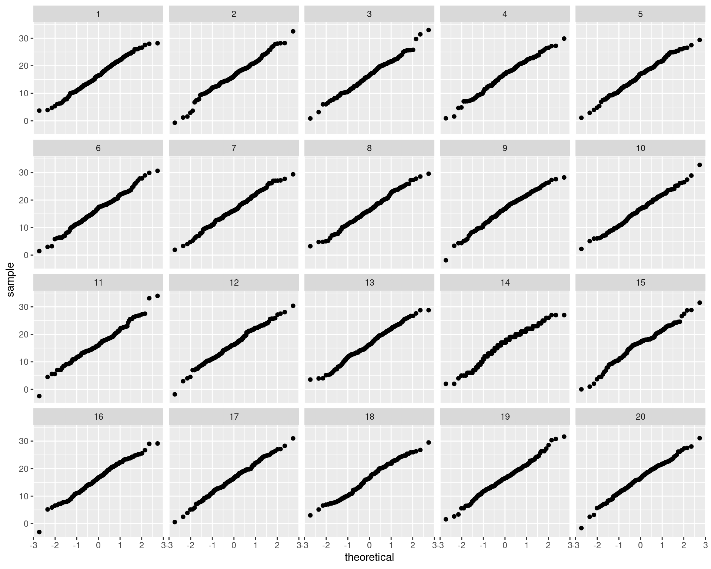
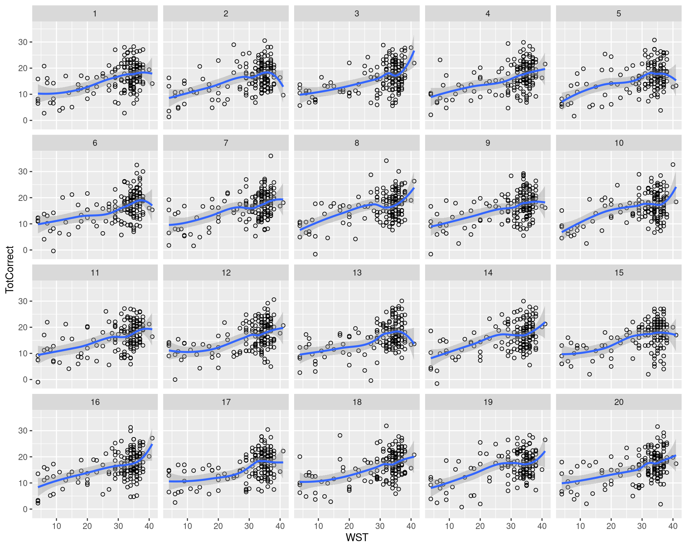
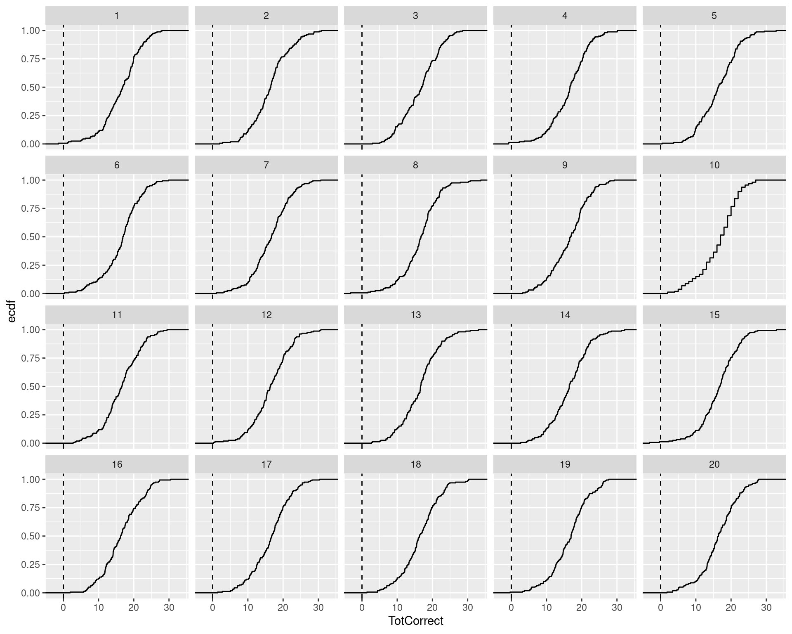

t.test(Y ~ X, data = dat, var.equal = TRUE)Checking model assumptions without getting paranoid
assumptions
R
tutorial
graphs
Statistical models come with a set of assumptions, and violations of these assumptions can render irrelevant or even invalid the inferences drawn from these models. It is important, then, to verify that your model’s assumptions are at least approximately tenable for your data. To this end, statisticians commonly recommend that you check the distribution of your model’s residuals (i.e., the difference between your actual data and the model’s fitted values) graphically. An excellent piece of advice that, unfortunately, causes some students to become paranoid and see violated assumptions everywhere they look. This blog post is for them.
In the following, I’ll outline the assumptions of the simple linear regression and how they can be checked visually without succumbing to paranoia. t-tests, ANOVA and ANCOVA all make essentially the same assumptions. These assumptions can be checked in the same way as illustrated below, but doing so requires that they are rewritten as regression models. For instance, if you want to test whether the mean of a variable called \(Y\) varies between group encoded in variable \(X\) using a t-test, you’d ordinarily do this in R using the following syntax:
But you’ll get the same results if you rewrite this as a linear model:
lm(Y ~ X, data = dat)To make use of the techniques below, you need to use the second notation.
Assumptions of the simple linear regression model
A simple linear regression model relates one continuous predictor to a continuous outcome in terms of a straight line and some random scatter about that line. Its key assumptions are the following:
A straight line adequately captures the trend in the data. The model will still gladly estimate the form of the linear relationship in the data even if this relationship isn’t approximately linear, but its estimates won’t be as relevant.
The residuals are independent of one another. While this extremely important assumption can sometimes be checked, in most cases you’ll need to know how the data were collected to know whether it is tenable. For this reason, I won’t go into this assumption.
The amount of scatter of the residuals doesn’t vary with the predictor or (equivalently) with the fitted values for the outcome.
If you compute p-values or construct confidence intervals based on t-distributions, you tacitly assume that the residuals are drawn from a normal distribution. This assumption isn’t that important inasmuch as the Central Limit Theorem tends to kick in for reasonably-sized samples. Perhaps more importantly in such cases, the regression line captures the conditional means of \(y\) given \(x\) (e.g., the estimated mean for the outcome when the predictor value is 15). But if the distribution of the residuals is bimodal, skewed or otherwise wonky, the mean may not be such a relevant summary of the distribution lying behind it.
Assumption checks and sampling error
When checking model assumptions, it’s important to keep sampling error in mind. Even if the residuals were actually drawn from a normal distribution, their distribution needn’t look normal in any given sample, as the figure below shows. Similarly, the residuals in a given sample may seem like they don’t have constant variance even if they actually do in the population, and a relationship may seem somewhat nonlinear in a sample even if it’s perfectly linear in the population at large.

But what’s important isn’t whether the normality, constant variance and linearity exist in the sample, but whether they exist in the population at large. Now it’s pretty difficult to tell conclusively whether this is indeed the case based on a smallish sample. But what you can do is check whether you could plausibly find the same degree of nonlinearity, non-constant variance and nonnormality that you observe in your sample even if they actually don’t occur in the population. Buja et al. (2009) and Majumder et al. (2013) introduce a visual inferencing procedure that allows you to judge whether the residual patterns in your sample are cause for concern or whether they are in fact to be expected even if everything were peachy. Below I illustrate this procedure (also see an earlier blog post for another example of visual inferencing: A purely graphical explanation of p-values).
An example
I’m going to use an old dataset of mine to fit a simple linear regression model between an outcome (TotCorrect, which in principle can take integer values between 0 and 45) and a predictor (WST, which takes integer values between 0 and 42) using R. The data can be read in directly from my webspace.
# Read in data
dat <- read.csv("http://homeweb.unifr.ch/VanhoveJ/Pub/Data/VanhoveBerthele2015.csv",
na.strings = "-9999")
# Only retain complete cases
dat <- dat[complete.cases(dat), ]
# Fit regression model
wst.lm <- lm(TotCorrect ~ WST, data = dat)If you want to inspect the estimated coefficients and their standard errors, run the command summary(wst.lm). Here I’ll skip right to the assumption checks.
Checking for non-linearity
I fitted the relationship between WST and TotCorrect linearly. This assumption is typically checked by inspecting whether the model’s residuals still show some trend when plotted against the model’s fitted values. If the relationship is linear, there shouldn’t be no such trend. However, due to random variation, you’re bound to find some pattern in the residuals if you squint hard enough. To help analysts evaluate whether such patterns are compatible with a truly linear relationship tainted by some random variation, Buja et al. (2009) and Majumder et al. (2013) suggest the following procedure:
- Fit your model.
-
Simulate new outcome data from your model. In our example, the estimated intercept is about 7.83 and the estimated slope parameter for the
WSTvariable is about 0.29.# Estimated coefficients coef(wst.lm)(Intercept) WST 7.8321310 0.2860069For a participant with a
WSTvalue of 13, the fittedTotCorrectvalue is consequently \(7.83 + 0.29 \times 13 = 11.6\). To simulate a new datum for such a participant, this fitted value (\(11.6\)) is combined with a random number drawn from a normal distribution whose mean is 0 and whose standard deviation equals the model estimate for the standard deviation of the residuals – in our case about 4.81.# Estimated standard deviation of residuals sigma(wst.lm)[1] 4.814969Such new outcome data are simulated a couple of times for each observation in the dataset. (This can be achieved quickly using the
simulate()function.)Importantly, the new outcome data were simulated from a regression model that assumes that the relationship between the predictor and the outcome is linear, that the residuals are randomly sampled from one and the same normal distribution and so have constant variance. In a word, all assumptions we want to test are literally true in the simulated data.
- Now refit your model to the simulated datasets and extract the residuals from each model.
- Draw diagnostic plots for both your actual model and the models fitted on the simulated datasets (for which the model’s assumptions are literally true) and jumble up the different plots.
- If you can’t distinguish the diagnostic plot based on your actual data from the ones based on the simulated datasets, it doesn’t suggest that your model violates the assumption that you were testing.
We’ll carry out these steps in R, of course; the nullabor package is helpful for this.
The visual inferencing procedure is based on randomly generated data so if you want to obtain the same results as in this blog post, be sure to run the set.seed() command below.
# Set seed for generating random numbers
set.seed(2018-04-25)
# Load the tidyverse packages;
# use install.packages("tidyverse")
# to install if needed.
library(tidyverse)
# Load the nullabor package (for visual inferencing);
# use install.packages("nullabor")
# to install if needed.
library(nullabor)Then construct a data frame that contains the real data and the real model’s residuals and fitted values. Importantly, the column with the residuals should be called .resid and the one with the fitted values .fitted, otherwise the next steps won’t work.
real_data <- data.frame(dat,
.resid = residuals(wst.lm),
.fitted = fitted(wst.lm))Now create a new object (here parade) that combines the newly created real_data with (by default) 19 similar but simulated datasets based on the same model. This is accomplished using nullabor’s convenience function null_lm() (for generating the simulated datasets) and the lineup() function (for combining the real and simulated datasets and shuffling their positions).
parade <- lineup(null_lm(TotCorrect ~ WST), real_data)decrypt("sFZM ldbd 32 PN43b3N2 ux")We’ll come back to this “decrypt” message in a minute. First let’s plot the relevant diagnostic plots to check for remaining trends in the residuals:
ggplot(parade,
aes(x = .fitted, # plot residuals against
y = .resid)) + # fitted values
geom_point(shape = 1) + # plot values as points
geom_smooth(formula = "y ~ x") + # add a scatterplot smoother (optional)
facet_wrap(~ .sample) # separate panels for each dataset`geom_smooth()` using method = 'loess'
In your view, which plot shows the strongest residual trend?
After you’ve made up your mind, copy-paste decrypt("sFZM ldbd 32 PN43b3N2 ux") (the output of the lineup() command above) to the R prompt. If this confirms your answer, then perhaps you ought to consider reading up on models that can take into account nonlinear patterns. But if you thought another plot was more conspicuous, then that shows that randomness alone can plausibly account for any departures from linearity in your actual data.
(In case you already knew beforehand what the diagnostic plot for your model looks like, just mail this type of lineup to a couple of colleagues of yours and ask them to identify the most conspicuous pattern.)
Checking for non-constant variance
To check for non-constant variance (heteroskedasticity), the idea is exactly the same as before. The only thing that changes is the diagnostic plot. We’ll create a new lineup with new simulated datasets, though.
parade <- lineup(null_lm(TotCorrect ~ WST), real_data)decrypt("sFZM ldbd 32 PN43b3N2 5J")To check for heteroskedasticity, statisticians typically plot the square roots of the absolute residuals against the fitted values against the fitted data. If the variance around the regression line is constant, then you’d expect a horizontal trend line in this type of plot.
ggplot(parade,
aes(x = .fitted,
y = sqrt(abs(.resid)))) +
geom_point(shape = 1) +
geom_smooth(formula = "y ~ x") +
facet_wrap(~ .sample)`geom_smooth()` using method = 'loess'
Again, ask yourself which plot looks most conspicuously heteroskedastic? Then check your answer with decrypt(). If you guessed right, then perhaps you need to consider brushing up on methods that can take into account heteroskedasticity, but otherwise, you can conclude the residual plot doesn’t give you much reason to doubt that the residuals are homoskedastic.
Checking for non-normality
The same procedure as every year, James. A useful diagnostic plot for checking for non-normal residuals is the quantile-quantile plot. If the residuals are distributed normally, the points in such plots fall on a diagonal line.
parade <- lineup(null_lm(TotCorrect ~ WST), real_data)decrypt("sFZM ldbd 32 PN43b3N2 5x")ggplot(parade,
aes(sample = TotCorrect)) +
stat_qq() +
facet_wrap(~ .sample)
Again, decide which pattern is most conspicuous and check your answer. If the normality assumption is clearly violated, you need to ask yourself whether the degree of normality is such that it would affect your inferences. If you want to play it safe, you can try computing p-values and constructing confidence intervals using a bootstrap procedure that doesn’t assume normality, for instance.
Impossible data
The technique illustrated above is also useful to make it clearer for yourself what you know about your data but your model doesn’t. Let’s generate a new lineup:
parade <- lineup(null_lm(TotCorrect ~ WST), real_data)decrypt("sFZM ldbd 32 PN43b3N2 5O")Now draw scatterplots as you would:
ggplot(parade,
aes(x = WST,
y = TotCorrect)) +
geom_point(shape = 1) +
geom_smooth(formula = "y ~ x") +
facet_wrap(~ .sample)`geom_smooth()` using method = 'loess'
Take a closer look at each of these plots. Do you find patterns or data points that are just impossible given what you know about how the data were collected?
Several of these plots contain TotCorrect values below 0, but such values are impossible. I’m not saying categorically that this is a problem, but it does show that the model doesn’t ‘know’ everything about the problem at hand that I do know.
Let’s try this once more. Instead of drawing scatterplots, I visualise the distribution of the outcome variable using empirical cumulative density plots.
parade <- lineup(null_lm(TotCorrect ~ WST), real_data)decrypt("sFZM ldbd 32 PN43b3N2 5t")ggplot(parade,
aes(TotCorrect)) +
stat_ecdf(geom = "step") +
geom_vline(xintercept = 0, linetype = 2) +
facet_wrap(~ .sample)
What you’ll notice here is that there’s one empirical cumulative density plot that’s considerably more step-like than the others. This is the plot for our actual data and it reflects the fact that our actual outcome variable is measured in integers (0, 1, 2, …) rather than decimals. This is something I know, but clearly the model doesn’t and so it happily generates non-integer values for the outcome. This doesn’t dramatically affect the inferences from the model, but it still goes to show that fairly run-of-the-mill models such as these don’t encode everything the analyst knows about the problem at hand.
An important caveat
Saying that a diagnostic plot is still compatible with the model’s assumptions doesn’t mean that the diagnostic plot confirms that the model’s assumptions are true. This is particulary important if you’re dealing with small samples: Assumptions such as normality are more important yet harder to verify in small samples.
Conclusion
If your diagnostic plots suggest departures from linearity, homoskedasticity and normality, don’t panic: Such deviations may just be due to randomness. Draw a lineup of plots with both simulated and real data, and see if you can guess which plot show the real data: If you can’t, your diagnostic plot is in fact compatible with the model’s assumptions. If you don’t trust your own judgement, just ask a colleague to identify the most different plot in the lineup.
References
Buja, Andreas, Dianne Cook, Heike Hofmann, Michael Lawrence, Eun-Kyung Lee, Deborah F. Swayne & Hadley Wickham. 2009. Statistical inference for exploratory data analysis and model diagnostics. Philosophical Transactions of the Royal Society A 367(1906). 4361-4383. doi:10.1098/rsta.2009.0120
Majumder, Mahbubul, Heike Hofmann & Dianne Cook. 2013. Validation of visual statistical inference, applied to linear models. Journal of the American Statistical Association 108(503). 942-956. doi:10.1080/01621459.2013.808157
Software versions
Please note that I reran the code on this page on August 6, 2023.
devtools::session_info()─ Session info ───────────────────────────────────────────────────────────────
setting value
version R version 4.3.1 (2023-06-16)
os Ubuntu 22.04.3 LTS
system x86_64, linux-gnu
ui X11
language en_US
collate en_US.UTF-8
ctype en_US.UTF-8
tz Europe/Zurich
date 2023-08-27
pandoc 3.1.1 @ /usr/lib/rstudio/resources/app/bin/quarto/bin/tools/ (via rmarkdown)
─ Packages ───────────────────────────────────────────────────────────────────
package * version date (UTC) lib source
cachem 1.0.6 2021-08-19 [2] CRAN (R 4.2.0)
callr 3.7.3 2022-11-02 [1] CRAN (R 4.3.1)
class 7.3-22 2023-05-03 [4] CRAN (R 4.3.1)
cli 3.6.1 2023-03-23 [1] CRAN (R 4.3.0)
cluster 2.1.4 2022-08-22 [4] CRAN (R 4.2.1)
colorspace 2.1-0 2023-01-23 [1] CRAN (R 4.3.0)
crayon 1.5.2 2022-09-29 [1] CRAN (R 4.3.1)
DEoptimR 1.1-0 2023-07-12 [1] CRAN (R 4.3.1)
devtools 2.4.5 2022-10-11 [1] CRAN (R 4.3.1)
digest 0.6.29 2021-12-01 [2] CRAN (R 4.2.0)
diptest 0.76-0 2021-05-04 [1] CRAN (R 4.3.1)
dplyr * 1.1.2 2023-04-20 [1] CRAN (R 4.3.0)
ellipsis 0.3.2 2021-04-29 [2] CRAN (R 4.2.0)
evaluate 0.15 2022-02-18 [2] CRAN (R 4.2.0)
fansi 1.0.4 2023-01-22 [1] CRAN (R 4.3.1)
farver 2.1.1 2022-07-06 [1] CRAN (R 4.3.0)
fastmap 1.1.0 2021-01-25 [2] CRAN (R 4.2.0)
flexmix 2.3-19 2023-03-16 [1] CRAN (R 4.3.1)
forcats * 1.0.0 2023-01-29 [1] CRAN (R 4.3.0)
fpc 2.2-10 2023-01-07 [1] CRAN (R 4.3.1)
fs 1.5.2 2021-12-08 [2] CRAN (R 4.2.0)
generics 0.1.3 2022-07-05 [1] CRAN (R 4.3.0)
ggplot2 * 3.4.2 2023-04-03 [1] CRAN (R 4.3.0)
glue 1.6.2 2022-02-24 [2] CRAN (R 4.2.0)
gtable 0.3.3 2023-03-21 [1] CRAN (R 4.3.0)
hms 1.1.3 2023-03-21 [1] CRAN (R 4.3.0)
htmltools 0.5.5 2023-03-23 [1] CRAN (R 4.3.0)
htmlwidgets 1.6.2 2023-03-17 [1] CRAN (R 4.3.1)
httpuv 1.6.11 2023-05-11 [1] CRAN (R 4.3.1)
jsonlite 1.8.7 2023-06-29 [1] CRAN (R 4.3.1)
kernlab 0.9-32 2023-01-31 [1] CRAN (R 4.3.1)
knitr 1.39 2022-04-26 [2] CRAN (R 4.2.0)
labeling 0.4.2 2020-10-20 [1] CRAN (R 4.3.0)
later 1.3.1 2023-05-02 [1] CRAN (R 4.3.1)
lattice 0.21-8 2023-04-05 [4] CRAN (R 4.3.0)
lifecycle 1.0.3 2022-10-07 [1] CRAN (R 4.3.0)
lubridate * 1.9.2 2023-02-10 [1] CRAN (R 4.3.0)
magrittr 2.0.3 2022-03-30 [1] CRAN (R 4.3.0)
MASS 7.3-60 2023-05-04 [4] CRAN (R 4.3.1)
Matrix 1.6-0 2023-07-08 [4] CRAN (R 4.3.1)
mclust 6.0.0 2022-10-31 [1] CRAN (R 4.3.1)
memoise 2.0.1 2021-11-26 [2] CRAN (R 4.2.0)
mgcv 1.9-0 2023-07-11 [4] CRAN (R 4.3.1)
mime 0.10 2021-02-13 [2] CRAN (R 4.0.2)
miniUI 0.1.1.1 2018-05-18 [1] CRAN (R 4.3.1)
modeltools 0.2-23 2020-03-05 [1] CRAN (R 4.3.1)
moments 0.14.1 2022-05-02 [1] CRAN (R 4.3.1)
munsell 0.5.0 2018-06-12 [1] CRAN (R 4.3.0)
nlme 3.1-162 2023-01-31 [4] CRAN (R 4.2.2)
nnet 7.3-19 2023-05-03 [4] CRAN (R 4.3.1)
nullabor * 0.3.9 2020-02-25 [1] CRAN (R 4.3.1)
pillar 1.9.0 2023-03-22 [1] CRAN (R 4.3.0)
pkgbuild 1.4.2 2023-06-26 [1] CRAN (R 4.3.1)
pkgconfig 2.0.3 2019-09-22 [2] CRAN (R 4.2.0)
pkgload 1.3.2.1 2023-07-08 [1] CRAN (R 4.3.1)
prabclus 2.3-2 2020-01-08 [1] CRAN (R 4.3.1)
prettyunits 1.1.1 2020-01-24 [2] CRAN (R 4.2.0)
processx 3.8.2 2023-06-30 [1] CRAN (R 4.3.1)
profvis 0.3.8 2023-05-02 [1] CRAN (R 4.3.1)
promises 1.2.0.1 2021-02-11 [1] CRAN (R 4.3.1)
ps 1.7.5 2023-04-18 [1] CRAN (R 4.3.1)
purrr * 1.0.1 2023-01-10 [1] CRAN (R 4.3.0)
R6 2.5.1 2021-08-19 [2] CRAN (R 4.2.0)
Rcpp 1.0.11 2023-07-06 [1] CRAN (R 4.3.1)
readr * 2.1.4 2023-02-10 [1] CRAN (R 4.3.0)
remotes 2.4.2 2021-11-30 [2] CRAN (R 4.2.0)
rlang 1.1.1 2023-04-28 [1] CRAN (R 4.3.0)
rmarkdown 2.21 2023-03-26 [1] CRAN (R 4.3.0)
robustbase 0.99-0 2023-06-16 [1] CRAN (R 4.3.1)
rstudioapi 0.14 2022-08-22 [1] CRAN (R 4.3.0)
scales 1.2.1 2022-08-20 [1] CRAN (R 4.3.0)
sessioninfo 1.2.2 2021-12-06 [2] CRAN (R 4.2.0)
shiny 1.7.4.1 2023-07-06 [1] CRAN (R 4.3.1)
stringi 1.7.12 2023-01-11 [1] CRAN (R 4.3.1)
stringr * 1.5.0 2022-12-02 [1] CRAN (R 4.3.0)
tibble * 3.2.1 2023-03-20 [1] CRAN (R 4.3.0)
tidyr * 1.3.0 2023-01-24 [1] CRAN (R 4.3.0)
tidyselect 1.2.0 2022-10-10 [1] CRAN (R 4.3.0)
tidyverse * 2.0.0 2023-02-22 [1] CRAN (R 4.3.1)
timechange 0.2.0 2023-01-11 [1] CRAN (R 4.3.0)
tzdb 0.4.0 2023-05-12 [1] CRAN (R 4.3.0)
urlchecker 1.0.1 2021-11-30 [1] CRAN (R 4.3.1)
usethis 2.2.2 2023-07-06 [1] CRAN (R 4.3.1)
utf8 1.2.3 2023-01-31 [1] CRAN (R 4.3.1)
vctrs 0.6.3 2023-06-14 [1] CRAN (R 4.3.0)
withr 2.5.0 2022-03-03 [2] CRAN (R 4.2.0)
xfun 0.39 2023-04-20 [1] CRAN (R 4.3.0)
xtable 1.8-4 2019-04-21 [1] CRAN (R 4.3.1)
yaml 2.3.5 2022-02-21 [2] CRAN (R 4.2.0)
[1] /home/jan/R/x86_64-pc-linux-gnu-library/4.3
[2] /usr/local/lib/R/site-library
[3] /usr/lib/R/site-library
[4] /usr/lib/R/library
──────────────────────────────────────────────────────────────────────────────